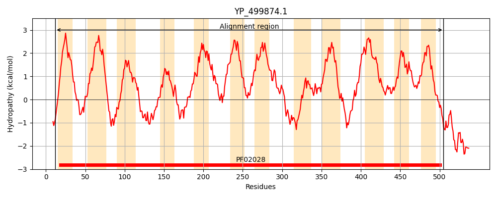

Hit Accession: P54417
Hit TCID: 2.A.15.1.1
Hit Description: gnl|BL_ORD_ID|10938 gnl|TC-DB|P54417|2.A.15.1.1 GLYCINE BETAINE TRANSPORTER OPUD - Bacillus subtilis.
Mach Len: 496
e:0.000000
Query TMS Count : 12
Hit TMS Count: 12
TMS-Overlap Score: 11.150000
Predicted Substrates:CHEBI:9175;sodium(1+), CHEBI:3073;glycine betaine, CHEBI:16457;S,S-dimethyl-beta-propiothetin, CHEBI:4623;(carboxymethyl)(dimethyl)sulfonium
BLAST Alignment:
Score: 1507 , Bit scores: 585 bits, E-value: 0.0e+00, Alignment length: 496, Percentage identity: 56
Query: 12 KKYSPVFIYSAIVVAIVVLLGAFLPEQFNYVTNNIKMWITEKLGWYYLILTTIIVFFCIFLIFSPIGKLKLGKPNDKPEFNTISWFAMLFSAGMGIGLVFYGAAEPMAHFA-TPPTADPKTTEAYTEALRSTFFHWGFHAWAVYGVVALALAYSQFRKGEPGLLSRTLRPLLGDKVEGPIGIFIDVLSVFATIVGVAVSLGMGALQINGGLHYLFNVPNNTFVQAIIIIVVTILFIASAWSGLSKGIQYLSNLNIGLGTILMVAALIVGPTVLILNMLTSSTGSLLNTFLFNSFDTAALNPQKREWMSSWTLYYWGWWLSWSPFVGVFIARVSKGRSIREFISGVLLVPAIVSFVWFSVFGVLGIETGKKHK-EIFDMTPETQLFGVFNHVPFGIVLSLIALLLIASFFITSADSATFVLGMQTTFGSLNPSSMVKVVWGISQALIAFVLLLAGGGNGAEALNAIQSAAIISAFPFSFVVILMMVSFYKDANQERK 505
K S VF + A VL G P+ V+ + + +IT+ GWYYL++ ++ V FC+FLIFSPIGK+KLGKP++KPEF +SWFAMLFSAGMGIGLVFYGAAEP++H+A + P+ + +T +A+ +ALR TFFHWG HAWA+Y +VAL +AY QFRKG PGL+S TL P+LGDKV GPIG ID ++VFAT+VGV+ SLG+GA QINGGL+YLF +PN VQ ++II+VT+LF+ SAWSGL KGI+YLSN N+ L +LM+ L+VGPTVLI+N T S G + + SF +P+KREW++SWT++YW WW+SWSPFVG+FIARVS+GR+IREF+ GVL+ P I++F+WFS+FGV ++ +K + ++ ET LFG +H P +V S++AL+LIA FFITSADSATFVLGMQT++GSLNP++ VK+ WGI Q+ +A VLL +GG L A+Q+ AI++A PFS V++LM+ S Y+ ++ER+
Sbjct: 3 KHISSVFWIVIAITAAAVLWGVISPDSLQNVSQSAQAFITDSFGWYYLLVVSLFVGFCLFLIFSPIGKIKLGKPDEKPEFGLLSWFAMLFSAGMGIGLVFYGAAEPISHYAISSPSGETETPQAFRDALRYTFFHWGLHAWAIYAIVALCIAYFQFRKGAPGLISSTLSPILGDKVNGPIGKAIDCIAVFATVVGVSTSLGLGATQINGGLNYLFGIPNAFIVQLVLIIIVTVLFLLSAWSGLGKGIKYLSNTNMVLAGLLMLFMLVVGPTVLIMNSFTDSIGQYIQNIVQMSFRLTPNDPEKREWINSWTIFYWAWWISWSPFVGIFIARVSRGRTIREFLIGVLVTPCILTFLWFSIFGVSAMDLQQKGAFNVAKLSTETMLFGTLDHYPLTMVTSILALILIAVFFITSADSATFVLGMQTSYGSLNPANSVKLSWGIIQSAMAAVLLYSGG------LAALQNTAILAALPFSIVILLMIASLYQSLSKERR 492 | Protein Hydropathy Plots: |
|---|
|  | |
Pairwise Alignment-Hydropathy Plot:
|
|---|
|